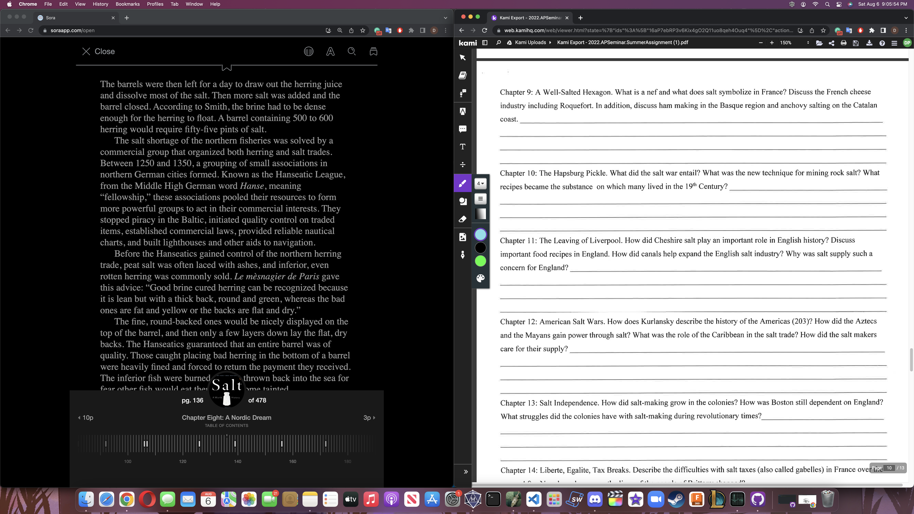
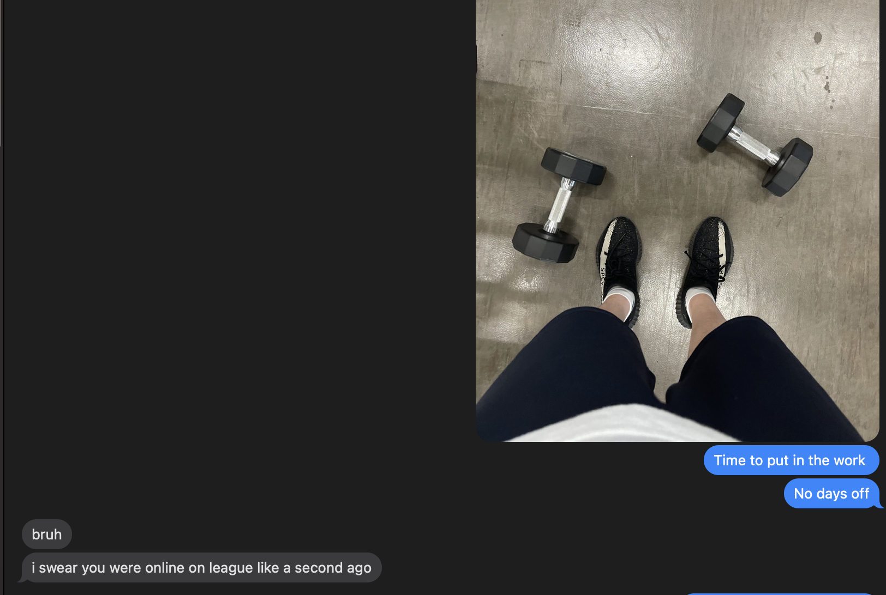

I'm on chapter and question 8 of the summer salt book, which is pretty bad cus
summer is about to end and i also have another nyt summer assignment but tbh i
dont care who cares i dont.

i also went to the gym but im pretty sure i gained more calories than i lost today (also dont really care)

also if ur wondering why my website looks a lot like jun's its because i literally just copied his entire
website stucture and just changed the words (thx jun for spending 3 hours on this website)